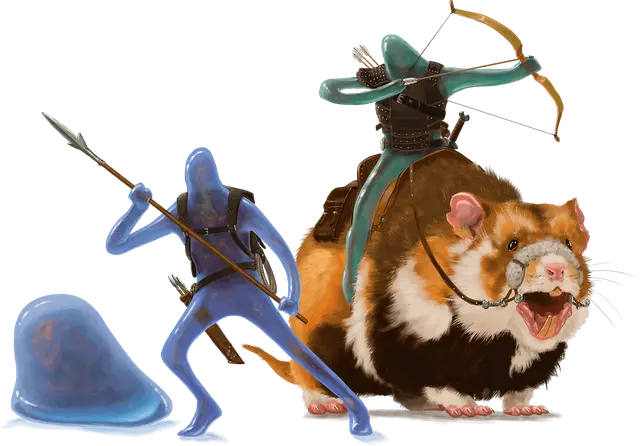

Плазмоид
Plasmoid

Создание вашего персонажа
Когда вы создаёте своего персонажа в D&D, вы решаете, является ли он представителем человеческой расы или одной из фантастических рас, включая те, что представлены в этой главе. Если вы создаёте персонажа, используя опцию расы, представленную здесь, следуйте описанным ниже правилам.
Увеличение характеристик
При определении значений характеристик вашего персонажа увеличьте одну из характеристик на 2, а другую — на 1, или увеличьте три различные характеристики на 1. Следуйте этому правилу независимо от метода, который вы используете для определения характеристик, бросаете ли вы кости или настраиваете значения.
Раздел «Быстрое создание» в выбранном вами классе даёт рекомендации по тому, какие характеристики увеличить. Вы вольны следовать этим советам или игнорировать их. Какие бы значения вы ни решили увеличить, значение ни одной характеристики не может превышать 20.
Языки
Ваш персонаж может говорить, читать и писать на Общем и ещё на одном языке, который вы и Мастер сочтёте подходящим для персонажа. «Книга игрока» содержит список распространённых языков на выбор. Мастер может свободно добавлять или удалять языки из этого списка для нужд кампании.
Вид существа
У каждого существа в D&D, включая каждого персонажа игрока, в правилах есть специальный тег, определяющий вид существа. Большинство персонажей игроков является Гуманоидами. В представленных вариантах рас указано, к какому виду существ относится ваш персонаж.
Вот список видов существ в игре в алфавитном порядке: Аберрация, Великан, Гуманоид, Дракон, Зверь, Исчадие, Конструкт, Монстр, Небожитель, Нежить, Растение, Слизь, Фея, Элементаль. Для видов не существует конкретных правил, но некоторые элементы игры различны для существ разных видов. Например, в тексте заклинания лечение ран [cure wounds] указано, что оно не действует на конструктов. Автогном является исключением из-за его особенности «Лечащая машина».
Продолжительность жизни
Типичная продолжительность жизни персонажей игроков в мультивселенной D&D составляет около века, если персонаж не умрёт насильственной смертью в приключениях. Представители некоторых рас, таких как гномы и эльфы, могут жить столетиями — факт, отмеченный в описании этих рас.
Рост и вес
Персонажи игроков, вне зависимости от расы, обычно имеют примерно тот же рост и вес, как люди в реальном мире. Если вы хотите определить рост или вес персонажа случайным образом, обратитесь к таблице «Случайный рост и вес» в «Книге игрока», и выберите строку в таблице, наилучшим образом описывающую ваше представление о персонаже.
Плазмоиды — это аморфные существа без определенной формы. В присутствии других народов они часто принимают схожую форму, однако очень мал шанс перепутать плазмоида с кем-то другим. Они поглощают еду при помощи осмоса подобно амёбам, а отходы выделяют при помощи крошечных пор. Они дышат, поглощая кислород при помощи других пор, а их конечности сильные и гибкие ровно настолько, чтобы держать и управлять оружием или инструментами. Несмотря на то, что большая часть плазмоидов серого цвета, они могут изменять свой цвет и становиться прозрачными при помощи поглощения красителей через поры.
Плазмоиды не имеют привычных внутренних органов. Их тела состоят из клеток, фибр, плазмоподобной слизи и скопления нервных клеток, известного как ганглия. Эти нервы позволяют плазмоидам обнаруживать свет, тепло, текстуру, звук, боль и вибрации. Плазмоиды могут сделать так, чтобы внешние слои их тела затвердели. В таком случае они будут обретать примерную форму человека, которая позволит им носить одежду и украшения. Они говорят, выдувая воздух через трубчатые полости, которые сужаются для воспроизведения звука.
Когда плазмоид спит, он теряет жёсткость и расплывается. В таком состоянии его можно перепутать с камнем или другой особенностью окружающей среды.
Особенности Плазмоидов
Вы обладаете следующими особенностями.
Увеличение характеристик. Либо значение одной характеристики по вашему выбору увеличивается на 2, а другой — на 1, либо значение трёх различных характеристик по вашему выбору увеличивается на 1.
Вид существа. Вы — Слизь.
Размер. Ваш размер — Маленький или Средний. Вы определяете размер при выборе расы.
Скорость. Ваша базовая скорость ходьбы — 30 футов.
Аморфный. Вы можете протиснуться через узкое пространство шириной вплоть до 1 дюйма, но при условии, что вы ничего не носите и не несёте. Кроме того, вы совершаете с преимуществом проверки характеристик для захвата или попытки избежать его.
Тёмное зрение. На расстоянии 60 футов вы при тусклом освещении можете видеть так, как будто это яркое освещение, и в темноте так, как будто это тусклое освещение. В темноте вы не можете различать цвета, только оттенки серого.
Задержка дыхания. Вы можете задерживать дыхание до 1 часа.
Естественная стойкость. Вы получаете сопротивление урону кислотой и ядом, а также совершаете с преимуществом спасброски против отравления.
Собственное изменение. Действием вы можете изменить форму своего тела, чтобы получить голову, одну или две руки, одну или две ноги и импровизированные кисти и ступни, или вы можете снова превратиться в шарик без конечностей. Пока вы имеете человекоподобную форму, вы можете носить одежду и доспехи, предназначенные для Гуманоидов вашего размера.
Бонусным действием вы можете выдавить из себя ложноножку до 6 дюймов шириной и 10 футов длинной или вернуть её обратно в своё тело. Этой ложноножкой вы можете манипулировать предметами, открывать закрытые двери или контейнеры, доставать или убирать предметы из открытого контейнера или выливать содержимое контейнеров. Ложноножка не содержит органов чувств и не может совершать атаки, активировать магические предметы или нести больше 10 фунтов.